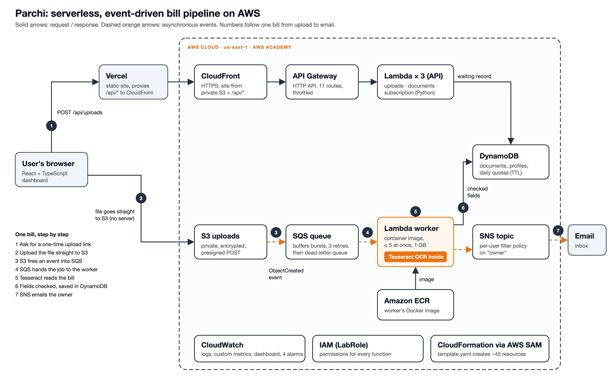
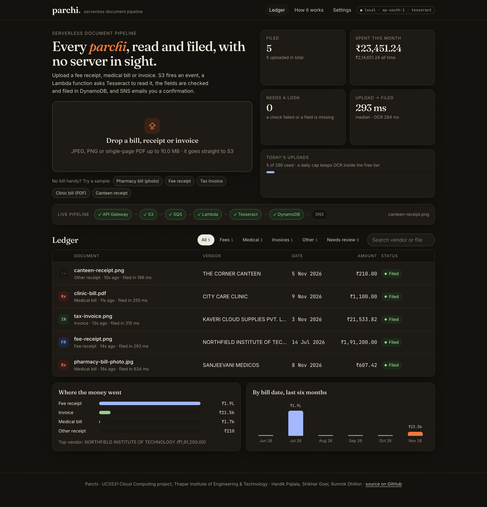
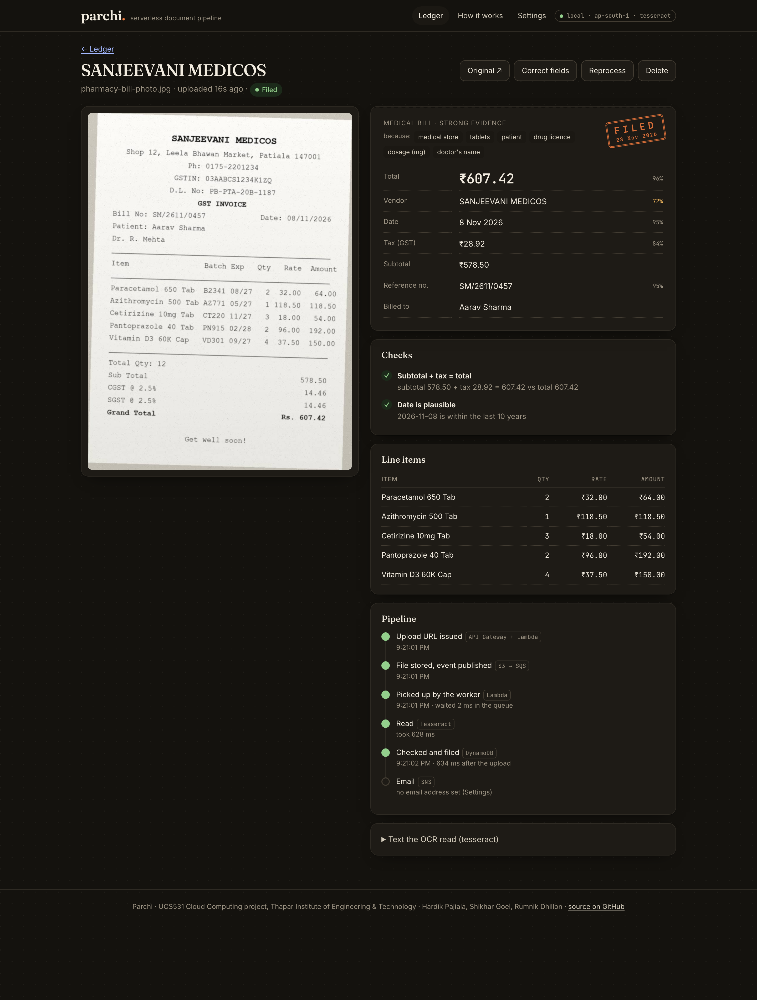
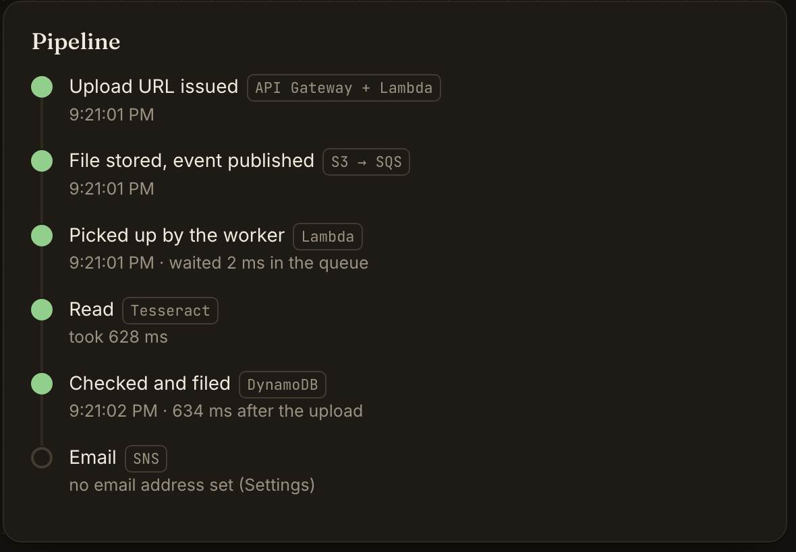
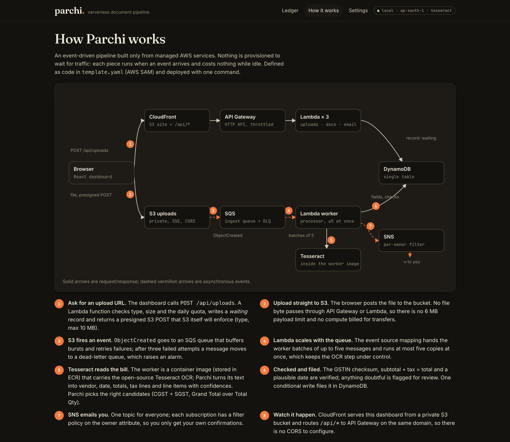

| Team | Hardik Pajiala · Shikhar Goel · Rumnik Dhillon |
| Faculty advisor | Dr. Anil Singh |
| Live deployment | parchi-theta.vercel.app (API on AWS through CloudFront) |
| Source code | github.com/pajiala99/parchi |
Students and families collect paper slips (fee receipts, pharmacy bills, GST invoices) that matter later for reimbursements, scholarships and tax filing but are rarely organised. Parchi (Hindi for "slip") lets a user upload a photo or PDF of a bill; the system extracts the vendor, date, amounts, GST and line items, classifies the bill, checks the numbers, files the result and emails a confirmation. It is built entirely from managed AWS services wired together by events (S3, SQS, Lambda, DynamoDB, SNS, API Gateway, CloudFront, ECR, CloudWatch) and defined as infrastructure as code with AWS SAM. It is deployed and working on AWS: a bill goes from upload to filed in about 5–7 seconds, the system scales from zero, and it costs nothing while idle.
Typing bill data by hand is slow and error-prone, and uploads are bursty: nothing for hours, then many at once. An always-on OCR server would be paid for while idle and still struggle with bursts, which makes this a natural fit for serverless computing. The objectives were to:
ObjectCreated event, delivered through SQS, triggers processing; components talk through events and queues, so each can fail or scale on its own.template.yaml (AWS SAM, a CloudFormation extension) describes about 45 resources; one command creates or deletes everything.
| Step | What happens |
|---|---|
| 1 | The dashboard calls POST /api/uploads (Vercel → CloudFront → API Gateway). The uploads Lambda validates type and size, takes one unit of the daily quota in a DynamoDB transaction, writes a waiting record and returns a presigned S3 POST valid for 5 minutes. |
| 2 | The browser posts the file straight to S3. The POST policy pins the key and content type and limits size to 10 MB; S3 itself rejects anything else. |
| 3 | S3 publishes an ObjectCreated event for the uploads/ prefix to the SQS ingest queue. |
| 4 | Lambda polls the queue and invokes the worker with batches of up to five messages, at most five workers at once. |
| 5 | The worker (a container image from ECR) reads the image with Tesseract OCR and turns words and confidences into fields. |
| 6 | Fields are normalised, classified and cross-checked; one conditional write stores the result in DynamoDB with timings. |
| 7 | SNS publishes a confirmation with an owner attribute; a filter policy delivers it only to that user's email. |
The dashboard polls GET /api/documents while anything is in flight and shows each bill's current stage. Data model: one
DynamoDB table, partition WS#<owner>, sort keys DOC#<ULID>, PROFILE and QUOTA#<day> (expired by TTL).
| Component | Technology |
|---|---|
| Infrastructure | AWS SAM template.yaml (~45 resources), scripts/deploy.sh, scripts/academy-up.sh |
| API functions | 3 Lambda functions in Python 3.13 on arm64 (Graviton): uploads, documents, subscription |
| Worker | Lambda container image (Python 3.13 + Tesseract OCR), 1 GB memory, stored in Amazon ECR |
| Extraction | OCR engine interface (Textract / Tesseract / replay); Indian money and date parsing; GSTIN checksum; classifier |
| Front end | React 19 + TypeScript + Vite, served by CloudFront from private S3, and by Vercel (proxying /api/*) |
| Quality | pytest (118 backend tests, 93% coverage) with moto (AWS emulator), Vitest, ruff, cfn-lint, GitHub Actions CI |
The stack parchi-dev is deployed in us-east-1 in an AWS Academy account with one command. AWS SAM builds the worker's
Docker image, pushes it to ECR, uploads the template and lets CloudFormation create every resource. Academy accounts cannot call
Amazon Textract or AWS Budgets, so the deployment uses --ocr-engine tesseract and the lab's IAM LabRole.
Because OCR sits behind an engine interface, switching from Textract to Tesseract needed only a Dockerfile and a deploy parameter;
the queue, checks, storage and emails were unchanged.
scripts/academy-up.sh rebuilds the
whole stack (about 10 minutes), points the Vercel site at the new CloudFront address and checks /api/health.OCR returns several candidates per field. On Indian bills "Total" may label the quantity column ("Total Qty: 12"), and tax is printed as separate CGST and SGST lines, so candidates are scored by label ("Grand Total", "Net Payable" high; "Sub Total", "Total Qty" penalised) and tax components are added up. Three checks make results trustworthy: the GSTIN mod-36 check digit, subtotal + tax = total (within ₹1 or 1%), and a plausible date. A failed check or a missing field marks the bill needs review; users can correct fields, and corrections are recorded. A keyword classifier labels each bill as fee receipt, medical bill, invoice or other and shows the evidence it used.
| Concern | How it is handled |
|---|---|
| Duplicate SQS delivery | The worker claims a document with a conditional write and a lease; a second copy is skipped (idempotent). |
| One bad file in a batch | ReportBatchItemFailures: only that message is retried. |
| Repeated failure | After 3 receives the event moves to the dead-letter queue (14 days) and a CloudWatch alarm fires. |
| Access control | Private buckets, SSE encryption, TLS-only policies, Origin Access Control for the site; per-workspace keys (stored hashed) scope every query. |
| Abuse and cost | API throttling (20 rps), daily upload caps (20 per user, 200 total) in a DynamoDB transaction, worker concurrency capped at 5. |
| Observability | CloudWatch custom metrics (EMF), a dashboard and 4 alarms (dead letters, worker errors, API 5xx, queue age). |
Cost for 1,000 bills with Tesseract: about $0.10 (Lambda time and requests; no per-page OCR fee). With Textract it would be
about $10, almost all OCR. Idle cost is effectively zero, whereas an always-on t3.small alone costs about $15 per month.
Screenshots of the same build that is deployed on AWS, run here with the project's local stack (the real Lambda handlers against an AWS emulator, with real Tesseract OCR), because the Academy sandbox is wiped between lab sessions. Timings on AWS are in Section 8.




| Measure | Result |
|---|---|
| Upload → filed, live on AWS | 4.6 – 7.3 s per bill on AWS (Tesseract 3.8 – 6 s), about 15 s on a cold start; 0.2 – 0.6 s on the local stack |
| Fields read correctly (6 sample bills × 6 fields) | 36 / 36 (type, vendor, date, reference, total, tax), including a tilted, noisy phone photo |
| Automated tests | 118 backend tests (93% coverage) + frontend tests, run in GitHub Actions CI on every push |
| End-to-end test | Presigned POST → S3 event → SQS → worker → DynamoDB → filtered SNS delivery, over real HTTP against an AWS emulator |
The accuracy figure is a smoke test on synthetic bills that were also used while writing the heuristics, not a benchmark.
StartExpenseAnalysis) with an SNS completion event.Parchi shows that a complete document-processing product (upload, OCR, validation, storage, notification and a live dashboard) can be built from managed cloud services connected by events, with no servers to run. Serverless gives elasticity and near-zero idle cost by default; the engineering effort went into correctness: idempotency, failure handling, least-privilege security, cost limits and checks on the extracted data. Deploying on AWS Academy also showed the value of loose coupling: when Textract was unavailable, the OCR engine was replaced without changing the rest of the pipeline.
References: AWS Lambda Developer Guide (SQS event sources, container images); Amazon S3 User Guide (event notifications, presigned POST); Amazon SNS (subscription filter policies); Amazon DynamoDB (conditional writes, transactions, TTL); AWS SAM Developer Guide; Tesseract OCR documentation; GSTN GSTIN check-digit specification.